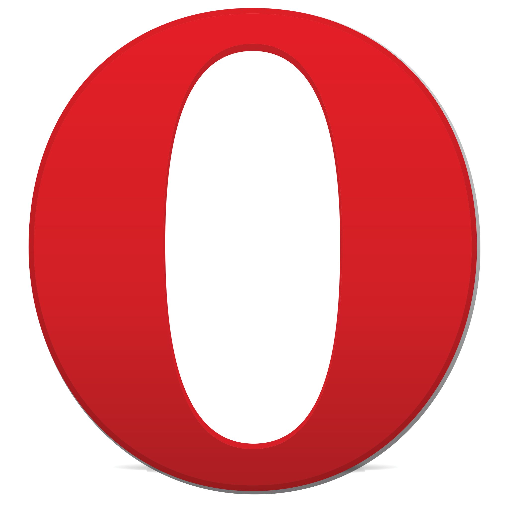

Opera es un navegador que comenzó en 1994 como proyecto de investigación de Telenor, una compañía telefónica Noruega, pero que desde 1995 desarrolla la compañía noruega Opera Software. La primera versión, Opera 2.1, se publicó en diciembre de 1996 y desde entonces ha ido publicando versiones tanto para PCs como para dispositivos móviles.
Su principal característica ha sido siempre el cumplimiento de las recomendaciones del W3C (no en vano Håkon Wium Lie, uno de los padres de las hojas de estilo, pertenece a esta compañía).
Hasta el año 2000 se trataba de un navegador de pago (con versión de prueba temporal), pero desde entonces es gratuito. Nunca ha tenido una gran cuota de mercado, salvo en dispositivos móviles, donde era bastante utilizado (aunque la competencia de Safari y Android han reducido su uso).
Desde la versión Opera 15 (julio de 2013) utiliza el motor de renderizado Blink, el motor de Google Chrome. En noviembre de 2016 Opera fue comprada por un consorcio chino